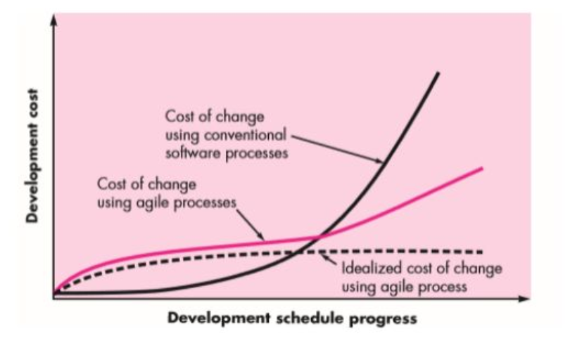

AGILE DEVELOPMENT
CIT 214 - Software Engineering
WHAT IS AGILITY?
Agility describes the ability to adapt to changes effectively and proactively. It is a way of dealing with, and ultimately succeeding in, an uncertain and turbulent environment.
Agility in software development refers to a development team's capacity to quickly respond to evolving requirements and consistently deliver top-notch products within defined timelines.
When it comes to the rapidly evolving technology sector, agility has proven to be a vital cornerstone for businesses striving to maintain a competitive edge. Given its dynamic nature, the software development industry, in particular, seems to be in a prime position to reap major benefits from the continuous advancements in agility.
Key Takeaway
The authors of the Agile Manifesto chose "Agile" as the label because that word represented the adaptiveness and response to change which was so important to their approach.
Possible Changes in a Software Project
- Changes within the software being engineered
- Changes to the team members
- Changes attributable to new technology
- Changes of all types will have an effect on the merchandise they build or the project that makes the merchandise
AGILITY AND THE COST OF CHANGE
- Black line (Cost of change using conventional software processes) - Shows an exponential increase in costs as the project progresses, making late-stage changes extremely expensive.
- Pink/red line (Cost of change using agile processes) - Demonstrates a more moderate linear increase in costs over time, enabling more affordable changes later in development.
- Dotted line (Idealized cost of change using agile process) - Represents the theoretical goal where change costs remain almost constant throughout the entire development lifecycle.
- Key benefit - Agile methodologies significantly flatten the cost curve of implementing changes, making projects more adaptable to evolving requirements even in later stages.
No need to study kay wala mn ni explanation sa ppt
THE AGILE METHODOLOGY
Agile methodology is a project management framework that breaks projects down into several dynamic phases, commonly known as sprints. The Agile framework is an iterative methodology.
After every sprint, teams reflect and look back to see if there was anything that could be improved so they can adjust their strategy for the next sprint.
Key Aspects of Agile Methodology
One thing that separates Agile from other approaches to software development is the focus on the people doing the work and how they work together. Solutions evolve through collaboration between self-organizing cross-functional teams utilizing the appropriate practices for their context.
Role of Managers in Agile
Managers make sure team members have, or obtain, the right skill sets. Managers provide an environment that allows the team to be successful. Managers mostly step back and let their teams figure out how they are going to deliver products, but they step in when the teams try but are unable to resolve issues.
AGILE MANIFESTO
The Agile Manifesto is a document that focuses on four values and 12 principles for Agile software development. It was published in February 2001 by 17 software developers who needed an alternative to the more linear product development process.
FOUR PILLARS OF AGILE
Individuals and Interactions over Processes and Tools
Agile teams value team collaboration and teamwork over working independently and doing things "by the book."
Working Software over Comprehensive Documentation
The software that Agile teams develop should work. Additional work, like documentation, is not as important as developing good software.
Customer Collaboration over Contract Negotiation
Customers are extremely important within the Agile methodology. Agile teams allow customers to guide where the software should go. Therefore, customer collaboration is more important than the finer details of contract negotiation.
Responding to Change over Following a Plan
One of the major benefits of Agile project management is that it allows teams to be flexible. This framework allows for teams to quickly shift strategies and workflows without derailing an entire project.
12 AGILE PRINCIPLES
The four values of Agile are the pillars of Agile methodology. From those values, the team developed 12 principles. If the four values of Agile are the weight-bearing pillars of a house, then these 12 principles are the rooms you can build within that house.
Agile Principles
- Customer satisfaction through early delivery - Prioritize regular delivery of valuable software to satisfy customers.
- Embrace changing requirements - Welcome changes at any stage to provide competitive advantage to customers.
- Frequent software delivery - Deliver working software often, preferably on a shorter timescale.
- Daily collaboration - Business people and developers must work together throughout the project.
- Build around motivated individuals - Support team members and trust them to accomplish their tasks.
- Face-to-face communication - Direct conversation is the most effective method for information exchange.
- Working software measures progress - Functional software is the primary indicator of advancement.
- Sustainable development pace - Maintain a constant, sustainable rhythm that can continue indefinitely.
- Technical excellence - Continuous attention to good design and quality code enhances agility.
- Simplicity is essential - Maximize work not done by focusing on simple solutions.
- Self-organizing teams - The best outcomes emerge from teams that organize themselves.
- Regular reflection and adaptation - Teams should periodically review and adjust their processes to improve.
AGILE PRINCIPLES (unsummarized)
- Our highest priority is to satisfy the customer through the early and continuous delivery of valuable software. When customers receive new updates regularly, they're more likely to see the changes they want within the product. This leads to happier, more satisfied customers—and more recurring revenue.
- Welcome changing requirements, even late in development. Agile processes harness change for the customer's competitive advantage. The Agile framework is all about adaptability. In iterative processes like Agile, being inflexible causes more harm.
- Deliver working software frequently, from a couple of weeks to a couple of months, with a preference to the shorter timescale. Similar to principle #1, delivering value to your customers or stakeholders frequently makes it less likely for them to churn.
- Business people and developers must work together daily throughout the project. Collaboration is key in the Agile framework. The goal is for people to break out of their own individual projects and collaborate together more frequently.
- Build projects around motivated individuals. Give them the environment and support they need, and trust them to get the job done. Agile works best when teams are committed and actively working to achieve a goal.
- The most efficient and effective method of conveying information to and within a development team is face-to-face conversation. If you're working on a distributed team, spend time communicating in ways that involve face-to-face communication like Zoom calls.
- Working software is the primary measure of progress. The most important thing that teams should strive for with the Agile framework is the product. The goal here is to prioritize functional software over everything else.
- Agile processes promote sustainable development. The sponsors, developers, and users should be able to maintain a constant pace indefinitely. Some aspects of Agile can be fast-paced, but it shouldn't be so fast that team members burn out. The goal is to maintain sustainability throughout the project.
- Continuous attention to technical excellence and good design enhances agility. If the team develops excellent code in one sprint, they can continue to build off of it the next. Continually creating great work allows teams to move faster in the future.
- Simplicity–the art of maximizing the amount of work not done–is essential. Sometimes the simplest solution is the best solution. Agile aims to not overcomplicate things and find simple answers to complex problems.
- The best architectures, requirements, and designs emerge from self-organizing teams. Similar to principle #5, proactive teams become valuable assets to the company as they strive to deliver value.
- At regular intervals, the team reflects on how to become more effective, then tunes and adjusts its behavior accordingly. Retrospective meetings are a common Agile practice. It's a dedicated time for teams to look back and reflect on their performance and adapt their behaviors for the future.
BENEFITS OF THE AGILE METHODOLOGY
Benefits of the Agile Methodology
- Agile methods are adaptable. One of the main benefits of using Agile processes in software development is the ability to shift strategies quickly, without disrupting the flow of a project. Because phases in the traditional waterfall method flow into one another, shifting strategies is challenging and can disrupt the rest of the project roadmap.
- Agile fosters collaborative teamwork. One of the Agile principles states that the most effective way to communicate with your team is face-to-face. Combine this with the principle that encourages teams to break project silos and you have a recipe for collaborative teamwork.
- Agile methods focus on customer needs. One of the unique aspects of software development is that teams can focus on customer needs much more closely than other industries. With the rise of cloud-based software, teams can get feedback from their actual customers quickly.
AGILE PROCESS MODELS
Kanban
Kanban is a visual approach to Agile. Teams use online Kanban board tools to represent where certain tasks are in the development process. Tasks are represented by cards on a board, and stages are represented in columns. As team members work on tasks, they move cards from the backlog column to the column that represents the stage the task is in. This method is a good way for teams to identify roadblocks and to visualize the amount of work that's getting done.
Scrum
Scrum is a common Agile methodology for small teams and also involves sprints. The team is led by a Scrum master whose main job is to clear all obstacles for others executing the day-to-day work. Scrum teams meet daily to discuss active tasks, roadblocks, and anything else that may affect the development team.
- Sprint - All work in Scrum is done in a series of short projects called Sprints. This enables rapid feedback loops.
- Sprint planning - This event kicks off the sprint. Sprint planning outlines what can be delivered in a sprint (and how).
- Daily scrum - This is a short, daily meeting to discuss progress and identify blockers, limited to 15 minutes.
- Sprint review - At the end of the Sprint, the Sprint Team meets with stakeholders to show what they have accomplished and get feedback.
- Sprint retrospective - Finally, the Scrum Team gets together to discuss how the Sprint went and if there are things they could do differently and improve in the next Sprint.
Extreme Programming (XP)
Typically used in software development, Extreme Programming (XP) is an Agile framework that outlines values that will allow your team to work together more effectively. The five values of XP include: Communication, Simplicity, Feedback, Courage, and Respect.
Common Methods and Techniques -
- Pair Programming - In XP, you write code in pairs sitting at one machine.
- Ten Minute Build - The goal is to automatically build the whole system and run all of the tests in ten minutes.
- Test-First Programming - You implement your features using the test-first approach, also called test-driven development (TDD).
- Weekly Cycle - Synonymous with iteration. The team meets on the first day of the week to reflect on progress.
- Slack - Add some low-priority tasks or stories in your weekly and quarterly cycles that can be dropped if the team gets behind.
- Continuous Integration - Is a practice where code changes are immediately tested when they are added to a larger code base.
Adaptive Project Framework (APF)
Also known as Adaptive Project Management (APM), it grew from the idea that unknown factors can show up at any time during a project. This technique is mainly used for IT projects where more traditional project management techniques don't apply.
This framework is based on the idea that project resources can change at any time. For example, budgets can change, timelines can shift, or team members working on the project may transition to different teams. APF focuses on the resources that a project has, as opposed to the resources a project needs.
Extreme Project Management (XPM)
This type of project management is often used for very complex projects with a high level of uncertainty. This approach involves constantly adapting processes until they lead to the desired result. This type of project involves many spontaneous changes and it's normal for teams to switch strategies from one week to the next.
XPM requires a lot of flexibility. This is one of the reasons why each sprint is short—only a few weeks maximum. This methodology allows for frequent changes, trial-and-error approaches to problems, and many iterations of self-correction.